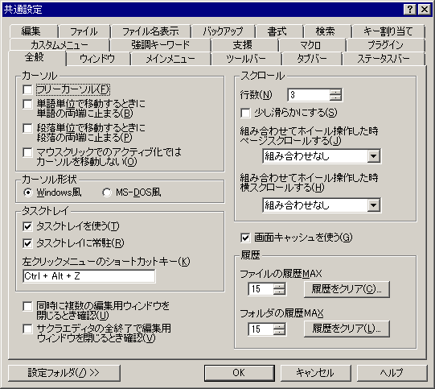

共通設定 『全般』プロパティ
『全般』
『ウィンドウ』
『メインメニュー』
『ツールバー』
『タブバー』
『ステータスバー』
『編集』
『ファイル』
『ファイル名表示』
『バックアップ』
『書式』
『検索』
『キー割り当て』
『カスタムメニュー』
『強調キーワード』
『支援』
『マクロ』
『プラグイン』

<カーソル>
□
フリーカーソル … 有効にすると、フリーカーソルモードになります。
このモードにすると、カーソル（キャレット、カレット）を改行記号より右側に移動させることができます。
カーソルとはウィンドウのクライアント領域で文字入力位置に点滅する縦線やブロック等のことです。
□
単語単位で移動するときに単語の両端に止まる
「
単語の左端に移動」、「
単語の右端に移動」を実行したときに、単語の一方の端だけでなく両端で止まるようになります。
□
段落単位で移動するときに段落の両端に止まる
「
前の段落に移動」、「
次の段落に移動」を実行したときに、移動するときに段落の始まりと終わりの両方で止まるようになります。
□
マウスクリックでのアクティブ化ではカーソルを移動しない
無効のときは、アクティブ／非アクティブにかかわらずマウスクリックした位置にカーソルが移動します。
有効にすると、非アクティブ時のマウスクリックではウィンドウのアクティブ化のみを行い、カーソル位置を移動しません。
<カーソル形状>
カーソルの形状を選択できます。
◎ Windows風 …
挿入モードでは細い縦線
上書きモードでは一文字大の矩形
○ MS-DOS風 …
挿入モードでは幅一文字分、高さ約1/2文字分の四角形
上書きモードでは一文字大の四角形
<タスクトレイ>
■
タスクトレイを使う … タスクトレイにアイコンを作るかどうかを設定します。
タスクトレイアイコンを左／右クリックするとそれぞれの
タスクトレイメニューがポップアップ表示されます。
■
タスクトレイに常駐 … タスクトレイに常駐するかどうかを設定します。
・常駐する場合は、編集ウィンドウをすべて閉じてもタスクトレイにアイコンが残ります。メニューなどから
サクラエディタの全終了を実行すると終了します。
・常駐しない場合は、編集ウィンドウがすべて閉じられた時点でタスクトレイのアイコンも終了します。
左クリックメニューのショートカットキー(Ctrl+Alt+Z)
サクラエディタが起動しているかまたはタスクトレイに常駐しているときには、キー操作でタスクトレイの左クリックメニューを呼び出せます。
そのためのホットキーをここで定義します。
うまく機能しない場合はそのキーが他のアプリケーションで使われている可能性があります。
<スクロール>
行数(3) … [↑][↓]キーなどでスクロールするとき、一度にスクロールする行数を設定します。
□
少し滑らかにする … 有効にした場合、スクロールが少し滑らかになります。
CPUパワーが低くてスクロールの遅いパソコンでは、無効にしたほうが快適です。
sakura:2.0.3.0以降ではマウススクロールもこの設定に従います。
組み合わせてホイール操作した時ページスクロールする … マウス中ボタン、マウスサイドボタン1、マウスサイドボタン2、CONTROLキー、SHIFTキーのいずれかを指定します。
組み合わせてホイール操作した時横スクロールする … マウス中ボタン、マウスサイドボタン1、マウスサイドボタン2、CONTROLキー、SHIFTキーのいずれかを指定します。

注意
マウスの各操作を独自に割り当て可能なドライバ・ユーティリティ類を使用していると、サイドボタンなどとの組み合わせで期待通り動作しない場合があります。

ヒント
マウスホイールでのスクロール行数は、Windowsの設定にしたがっています。
コントロールパネルのマウスで設定できます。ページスクロールにも対応しています。
□画面キャッシュを使う
有効にすると、カーソル移動のみなど画面がスクロールしない場合のCPU負荷が下がります。
お使いの環境によっては、カーソル位置縦線などの処理で特に効果が期待できます。
<履歴>
ファイルの履歴MAX(15) … 最近使ったファイルの履歴の最大数(36まで)を設定します。
ただしリムーバブルメディアからのものは履歴に入りません。
[履歴をクリア]ボタン …… 最近使ったファイルの履歴をクリアします。
フォルダの履歴MAX(15) … 最近使ったフォルダの履歴の最大数(36まで)を設定します。
ただしリムーバブルメディアからのものは履歴に入りません。
[履歴をクリア]ボタン …… 最近使ったフォルダの履歴をクリアします。
□[すべて閉じる]で他に編集用のウィンドウがあれば確認する
(sakura:1.5.15.0以降)
有効にすると、複数のウィンドウをまとめて閉じるの動作のときに終了の確認をします。
ただし未保存のファイルがある場合は、どんなときでも必ず保存の確認をします。
□終了の確認をする
有効にすると、「サクラエディタの終了」(常駐タスクトレイアイコンも含めて終了する)時に編集ウィンドウが一枚以上ある場合は、終了の確認をします。
ただし未保存のファイルがある場合は、どんなときでも必ず保存の確認をします。
[設定フォルダ]
設定フォルダボタンは、ユーザー別設定を行っている場合のみ表示されます。